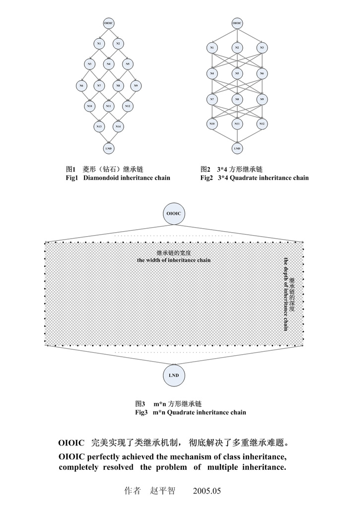

历史教材（1.0.6）：旧 API 和 VC6 步骤仅供参考，当前开发请阅读新版教程与构建指南。 Current guide
《 OIOIC 入门教程 》第2版 赵平智 著 pervise.zhao@gmail.com http://code.google.com/p/oioic |
OIOIC 1.0.6 |
| 首页 << |
OIOIC 完美地支持任意复杂的继承链，彻底解决了软件界多重继承难题。

| 上一章 多重继承 | 下一章 对象化对象的多线程访问控制 |
版权©2005-2009 赵平智。保留所有权利。